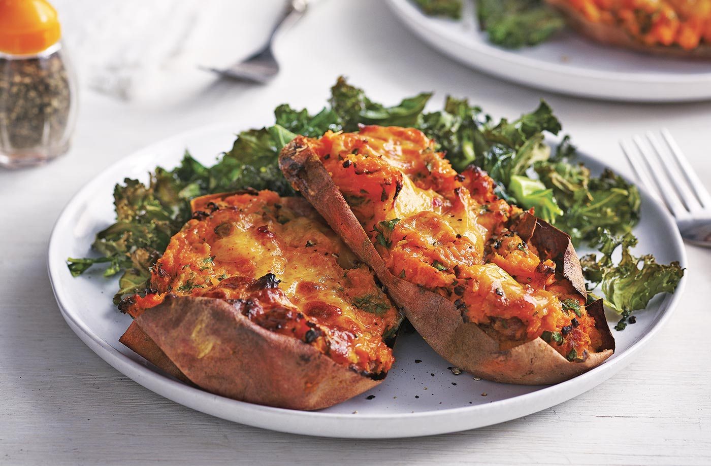
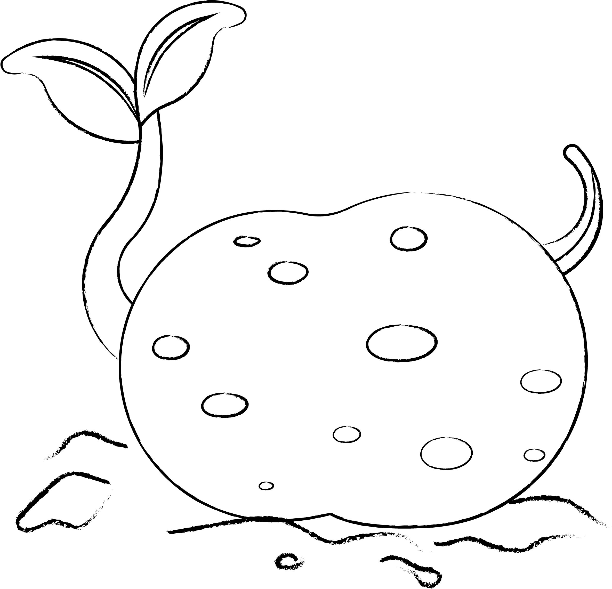

Potato food of the day:
Oh My what a sweet potato
The sweet potato has been enjoyed around the globe for centuries, but often plays second fiddle to yellow, white, and red potatoes. This is where that ends. From crispy, savory fries and tots to creamy curries, cheesy enchiladas and spicy soups, these sweet potato recipes show that this super spud deserves the spotlight. Still thinking tubers?

Did you miss what we had for yesterdays food? have a look if you like!
See previous food of the day